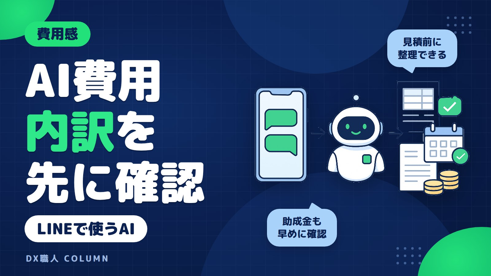
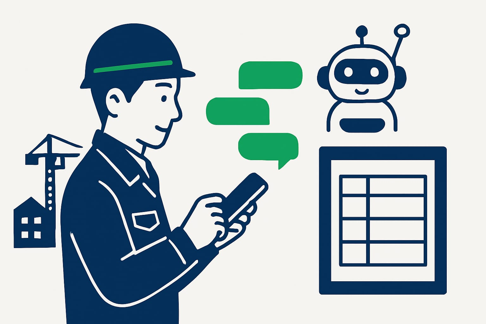
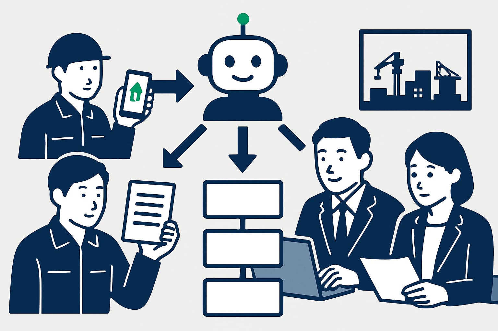
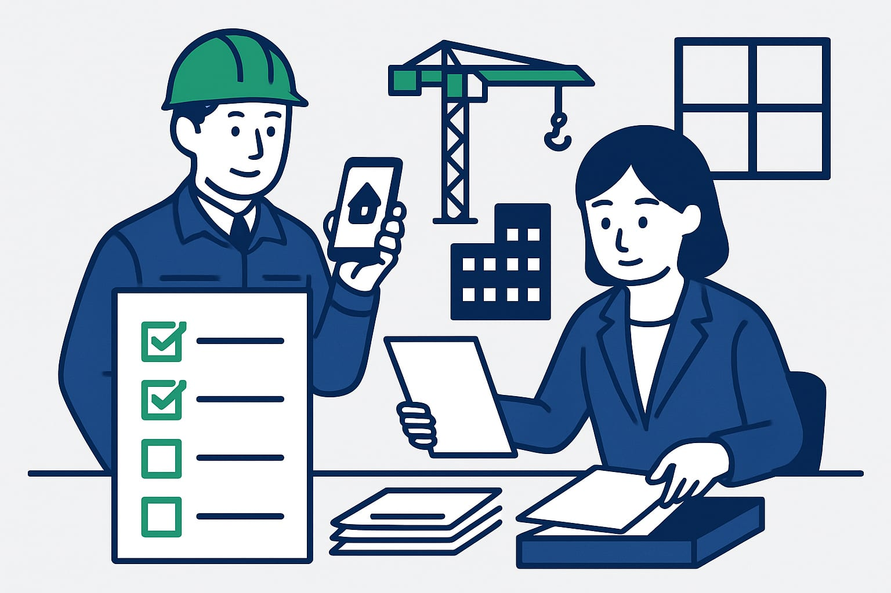

AIシステム導入費用の相場と中小建設業の助成金・補助金活用
AIシステムを入れたいと思っても、初期費用や月額費用が見えないと相談しにくいものです。特に建設業は、現場と事務所で作業が分かれます。この記事では、LINEで使えるAIシステムの費用内訳と、助成金・補助金で負担を下げる考え方を整理します。

この記事の要点
- 費用は作る範囲で大きく変わる
- LINE入口なら現場負担を抑えやすい
- 見積・日報など1業務から始める
- 制度は年度ごとの確認が必要
- 相談前に帳票と困りごとを整理
中小建設業のAIシステム導入費用は何で決まるか
導入費用の相場を調べると、安いものから高いものまで出てきます。理由は、AIシステムの中身が同じではないためです。単に質問へ答えるだけか、見積書や日報の形まで整えるかで費用は変わります。
中小建設業では、最初から全業務をAI化する必要はありません。まずは、毎日発生する打ち直しや確認作業を1つ選びます。そこに絞ると、初期費用も月額費用も考えやすくなります。
大きく見ると、費用は次の3つで差が出ます。
- LINEなど、現場が使う入口をどうするか
- 見積書、日報、請求確認など、返す形をどこまで合わせるか
- Excelや既存の管理表とつなぐか
一般には、既存の形を使うほど費用は抑えやすくなります。会社専用の帳票や流れに細かく合わせるほど、設定や確認の時間が増えます。見積を取るときは、安いか高いかだけでなく、何をしてくれる金額かを見ます。
LINEで使えるAIシステムは費用を抑えやすい

LINEで使えるAIシステムは、現場側の入口を増やしません。作業員が新しいアプリを探したり、別の画面にログインしたりする手間を減らせます。いつものトークに送れることは、費用以外の大きな利点です。
たとえば、現場から次のように送ります。
現場から送る内容
A邸、外壁補修、10月19日、2名、9時から17時。下地補修まで完了。写真3枚。
AIの返答
日報の下書きです。工事名、作業内容、人数、時間、進捗、添付写真の項目に分けました。確認して問題なければ事務所へ共有できます。
このように、現場の短いメモをそのまま使えます。事務所では、文章を整える時間や聞き直しを減らせます。DX職人のようにLINEを入口にする形なら、現場と事務所の間で使う道具を増やしすぎずに始められます。
費用を抑えるには、最初から多機能にしないことも大切です。まずは日報だけ、見積の下書きだけ、写真整理だけという形で始めます。使う場面がはっきりすると、必要な設定も少なくなります。
費用の内訳は初期費用・月額費用・設定費で見る
AIシステムの見積では、合計金額だけを見ると比べにくくなります。初期費用が安くても月額費用が高い場合があります。逆に、最初の設定に費用をかけることで、毎月の作業が減る場合もあります。
目安としては、月額だけで使う小型の仕組み、初期設定費と月額費用がある業務向けの仕組み、会社専用に作り込む仕組みの順に高くなりやすいです。ただし、実際の金額は範囲や人数で変わります。
| 費用項目 | 主な内容 | 変わる理由 |
|---|---|---|
| 初期費用 | LINE連携、AIの返答設計、基本設定 | 既存型か個別型かで変わる |
| 月額費用 | AI利用料、サーバー、利用人数 | 利用人数や利用回数で変わる |
| 設定費 | 見積書、日報、請求確認の項目合わせ | 帳票の数や細かさで変わる |
| 外部連携費 | Excel、表計算、クラウド保存との接続 | つなぐ先が多いほど増えやすい |
| 保守・運用サポート費 | 軽い変更、確認、トラブル対応 | 対応範囲で変わる |
見積を受け取ったら、何が月額に含まれるかを確認します。AIの利用回数に上限があるか、帳票の変更は別料金か、LINEのグループを増やせるかも見ておきます。
見積・日報・請求確認のどれを減らすかで効果を見る

費用対効果とは、払う費用に対して減る手間やミスがどれだけあるかです。月額費用だけで判断すると、本当に減らしたい作業が見えなくなります。中小建設業では、毎週くり返す作業から見るのが現実的です。
たとえば、次のように考えます。
- 見積：現場写真、数量、メモから見積の下書きを作る
- 日報：LINEの短い報告から日報の文章を整える
- 請求確認：請求書と現場メモの差を確認する
- 写真整理：物件名や工事名ごとに分ける
見積の打ち直しについては見積書の打ち直しを減らす、AIの使いどころでも詳しく書いています。見積は、現場からの情報が少し違うだけで、事務所の修正が増えやすい作業です。
日報も同じです。夜に現場担当が思い出しながら書くより、移動中にLINEへ短く送るほうが続けやすくなります。AIは、その短い言葉を日報らしい文章に整える役割を持てます。
請求確認では、AIが最終判断をするのではありません。人が見る前の確認リストを作る役割です。抜けや違和感を先に並べることで、事務所の確認時間を短くできます。
助成金・補助金で負担を下げる考え方
建設業でAIシステムを検討するなら、助成金・補助金は早めに確認します。補助金は、システム導入費用の一部を後押しする制度として使える場合があります。助成金も、制度の条件に合えば検討対象になる場合があります。
ただし、金額や率、締切は年度や公募回で変わります。2026年10月19日時点でも、最新の公募要領で確認することが前提です。過去の情報だけで判断すると、対象や手順が違う場合があります。
特に注意したいのは、契約や発注の順番です。制度によっては、先に契約すると対象外になる場合があります。制度ごとに要件があるので、ご相談の際に確認します。
IT導入補助金の流れについては、IT導入補助金で建設業がLINEのAIシステムを導入する流れで整理しています。補助金を使いたい場合は、システムの内容と申請の時期を同時に見ておくと安心です。
助成金・補助金は、費用を下げる手段の1つです。制度ありきで決めるより、まず減らしたい作業を決めます。そのうえで、使える制度があるかを確認する順番が現実的です。
相談前に確認したい社内の情報と希望

相談前に、すべてを決めておく必要はありません。今の困りごとが分かれば、費用の見方はかなり整理できます。紙の帳票やExcelの写真でも十分です。
次の5つを確認しておくと、話が早く進みます。
- 一番減らしたい作業は何か
見積の打ち直し、日報作成、写真整理、請求確認などです。 - 今使っている帳票はあるか
見積書、日報、作業報告書、請求確認表などです。 - 使う人数は何人くらいか
現場担当、事務担当、社長だけで使うのかを見ます。 - LINEで送る情報は何か
写真、現場名、数量、作業時間、顧客からの要望などです。 - いつごろ使い始めたいか
助成金・補助金を考える場合は、時期の確認が特に大切です。
この時点で、きれいな資料を作る必要はありません。今の帳票をスマホで撮ったものでも、AIにどう整えさせるかを考えられます。
DX職人で相談するときの進め方
DX職人では、建設業や不動産業の現場で使うことを前提に、LINEから使えるAIシステムを考えます。新しい画面をいくつも開くより、いつものトークから送れる形を大切にします。
進め方は、次のような流れです。
- 減らしたい作業を1つ決める
例として、見積の下書き、日報の整形、物件対応の整理などです。 - LINEで送る内容を決める
現場名、写真、数量、時間、メモなど、現場が無理なく送れる形にします。 - AIが返す形を決める
日報の文章、見積のたたき台、確認リストなどです。 - 費用項目と制度を確認する
初期費用、月額費用、設定費を分けて見ます。助成金・補助金が使える可能性も確認します。
大切なのは、最初から大きく作りすぎないことです。小さく始めると、現場の負担も費用も確認しやすくなります。うまくいった作業から、次の業務へ広げる流れが取りやすくなります。
費用だけでなく情報の扱いも確認する
AIシステムは、費用が合えば終わりではありません。現場写真、住所、顧客名、図面、請求書などを扱う場合は、情報の扱いも確認します。安くても、どこに情報が保存されるか分からないまま使うのは避けたいところです。
最初に決めておきたいのは、次のような点です。
- AIに送ってよい情報と避ける情報
- 誰が見られるか
- どのくらい保存するか
- 取引先へ出す前に誰が確認するか
- 個人名や住所を伏せる必要があるか
AIに入力する情報の考え方は、AIに入力してよい情報、避けたほうがよい情報でも解説しています。特に不動産や建設では、住所や顧客情報を扱う場面が多くあります。
費用、使いやすさ、情報の扱い。この3つを一緒に見ることで、後から困る可能性を減らせます。相談時には、どんな情報をLINEで送る予定かも伝えておくと、より安全な形を考えやすくなります。
よくある質問
中小建設業のAIシステム導入費用はいくらくらいですか？
費用は、使う人数、LINE連携の有無、帳票の数、外部連携の有無で変わります。月額中心の小さな仕組みから、初期設定費が必要な業務向けの仕組みまで幅があります。
LINEで使うAIシステムは月額費用だけで始められますか？
内容によっては月額中心で始められる場合があります。ただし、見積書や日報の形を会社に合わせる場合は、初期設定費や帳票設定費がかかることがあります。
建設業のAIシステムに助成金や補助金は使えますか？
使える場合があります。ただし、対象経費、金額、率、締切は年度や制度で変わります。最新の公募要領を確認し、契約や発注の順番にも注意が必要です。
相談前に見積書や日報の様式は必要ですか？
あると費用感を出しやすくなります。紙の帳票やExcelをスマホで撮った写真でも構いません。今の作業の流れと、減らしたい手間を伝えることが大切です。
AIに現場写真や顧客情報を送っても大丈夫ですか？
送る前に、入力してよい情報と避ける情報を決める必要があります。住所、顧客名、図面、請求書などは扱いに注意し、保存先や閲覧範囲も確認します。